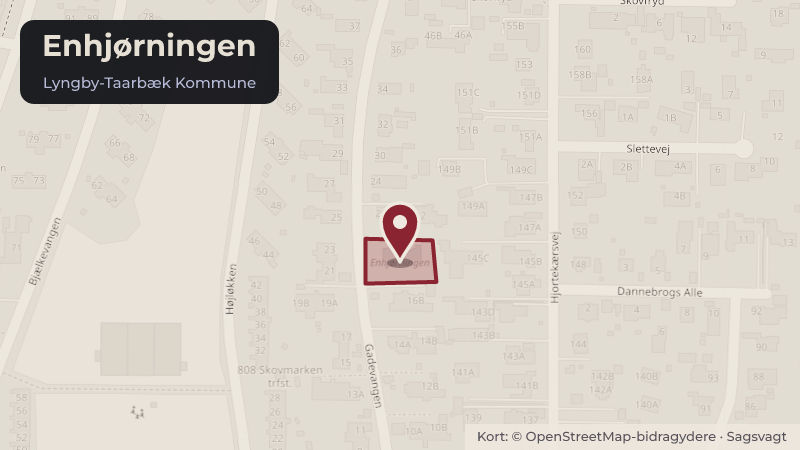

Besluttet 13. maj, Økonomiudvalget, Lyngby-Taarbæk
Opdatering af driftsoverenskomst for Rudolf Steiner Børnehaven Enhjørningen

Kort fortalt
- Hvem
- Økonomiudvalget, Lyngby-Taarbæk Kommune
- Hvornår
- Onsdag 13. maj 2026
- Status
- Besluttet. 1-2) Anbefalet.
Er noget forkert her? Skriv til os
Læs hele sagen Kommunens egen tekst
Indstilling
Forvaltningen foreslår, at
1. det godkendes, at der for daginstitutioner i Lyngby-Taarbæk Kommune med færre end 30
børneenheder kan dispenseres fra kommunens retningslinjer om maksimalt fem
lukkedage således, at der i tillæg til de fem lukkedage kan holdes lukket i juli måned.
2. den opdaterede driftsoverenskomst for Rudolf Steiner Børnehaven Enhjørningen
godkendes, herunder at det tilføjes, at institutionen holder lukket i juli måned.
Problemstilling
Den gældende driftsoverenskomst mellem Rudolf Steiner Børnehaven Enhjørningen og
Lyngby-Taarbæk Kommune er underskrevet i 1988. Siden da har dagtilbudsområdet udviklet
sig betydeligt, herunder hvad angår rammerne for driften af selvejende daginstitutioner, og der
er derfor behov for at opdatere driftsoverenskomsten. Lovgivningsmæssigt er Dagtilbudsloven
blandt andet kommet til, hvor fx det pædagogiske tilsyn beskrives, ligesom der er indført
skærpede krav til datasikkerhed, hvilket der i 2023 blev indgået et tillæg til
driftsoverenskomsten omkring.
Rudolf Steiner Børnehaven Enhjørningen holder, jf. deres gældende vedtægter fra 1997, lukket
i juli måned. Det fremgår også af deres hjemmeside, og forældrene bliver orienteret om dette,
når de vælger at skrive sig op til Enhjørningen. Forvaltningen er dog i forbindelse med
gennemgangen af den gældende driftsoverenskomst og de gældende vedtægter blevet
opmærksom på, at denne ordning ikke er i overensstemmelse med de gældende kommunale
retningslinjer for lukkedage i kommunens daginstitutioner.
Grundet institutionens størrelse vil det dog have betydelige konsekvenser for driften, hvis
institutionen ikke kan holde lukket i juli måned. Forvaltningen vurderer på den baggrund, at det
vil være gunstigt at få justeret de kommunale retningslinjer for lukkedage ift. mindre
institutioner.
Løsninger
Opdateret driftsoverenskomst
Med indgåelsen af en opdateret driftsoverenskomst vil aftalen mellem Rudolf Steiner
Børnehaven Enhjørningen og Lyngby-Taarbæk Kommune være tidssvarende og beskrive de
forhold, som aktuelt gør sig gældende i driften som selvejende daginstitution, herunder, at
daginstitutionen til enhver tid er omfattet af gældende lovgivning om offentlig forvaltning.
Derudover er driftsoverenskomsten tilpasset, så alle driftsoverenskomsterne med kommunens
selvejende daginstitutioner følger samme model.
Rudolf Steiner Børnehaven Enhjørningen er beliggende i en bygning ejet af tredjemand,
hvorfor § 13 i driftsoverenskomsten beskriver forholdene forbundet hermed, herunder hvordan
kommunen stiller sig i forhold til dette. Dette er ikke beskrevet i den nuværende
driftsoverenskomst.
Der er foretaget øvrige større ændringer i driftsoverenskomsten (gælder alle
driftsoverenskomster for selvejende institutioner):
I den nuværende driftsoverenskomst står, at ansættelse og afskedigelse af
daginstitutionens leder skal ske med kommunens godkendelse. I den opdaterede udgave
står, at det er bestyrelsen i daginstitutionen, som ansætter og afskediger lederen, med
orientering til kommunen.
Kommunen har i henhold til Retssikkerhedsloven og Dagtilbudsloven både ret og pligt til
at føre tilsyn med selvejende institutioner, herunder pædagogisk og økonomisk. Tilsynet
gennemføres af forvaltningen i kommunen.
I marts 2023 blev der, grundet regler om databeskyttelse, IT og NSIS, indgået aftale om
tillæg til daginstitutionens driftsoverensomst. Dette tillæg er skrevet ind i den opdaterede
driftsoverenskomst.
I den opdaterede driftsoverenskomst er det beskrevet, hvorledes den selvejende
daginstitution er omfattet af, eller kan afvige fra, kommunens retningslinjer for udbud og
indkøbsaftaler.
Den nuværende driftsoverensomst, den opdaterede version samt vedtægt for Rudolf Steiner
Børnehaven Enhjørningen er bilagt sagen.
Forslag om ændring af regler i kommunale retningslinjer for lukkedage
Af Enhjørningens gældende vedtægter fra 1997 fremgår det, at institutionen holder lukket i juli
måned. Ifølge Dagtilbudslovens skal der på alle hverdage med undtagelse af den 5. juni og
den 24. december tilbydes pasningsgaranti i dagtilbud. Selvejende institutioner er omfattet af
denne paragraf, mens private institutioner ikke er. Kommunerne kan derudover fastsætte
lokale retningslinjer for lukkedage og for den alternative pasning i de dagtilbud, der er omfattet
af kommunens forsyning.
Jf. Lyngby-Taarbæk Kommunes lokale retningslinjer kan institutionerne vælge at placere fem
lukkedage om året (ud over 24. og 31. december samt Grundlovsdag), men der skal, jf.
Dagtilbudsloven, tilbydes alternativ pasning på disse lukkedage. Lukkedagene skal lægges på
et tidspunkt, hvor der erfaringsmæssigt er lavt fremmøde. Ifølge vejledningen til
Dagtilbudsloven skal kommunens retningslinjer for lukkedage og alternativ pasning ske under
hensyn til driftsaftalen for selvejende institutioner. Det betyder, at driftsaftalen kan indeholde
specifikke vilkår, som kommunen skal respektere, når den fastsætter retningslinjer for
lukkedage. Der fremgår dog ikke noget om lukkedage i Enhjørningens gældende
driftsoverenskomst, og derfor gælder kommunens retningslinjer. Hvis en institution, herunder
Enhjørningen, skal have mulighed for at holde lukket hele juli, kræver det derfor en politisk
beslutning om at fravige de gældende retningslinjer. En sådan beslutning skal være sagligt
begrundet for at undgå usaglig forskelsbehandling af institutioner, der er omfattet af
kommunens forsyning.
Forvaltningen vurderer, at det på grund af det lave antal af børneenheder, i en institution på
størrelse med Enhjørningen, vil være en betydelig ressourcemæssig udfordring, hvis
institutionen skal holde åbent hele juli måned. Forvaltningen har været i dialog med
institutionen, som melder tilbage, at en åbning af institutionen i hele juli måned bl.a. vil have
følgende konsekvenser:
Den manglende afvikling af personalets hovedferie i sommerferieperioden vil give et
efterslæb, som medfører en dårligere normering resten af året, hvor den faglige kvalitet
forventeligt vil dale
Med en så lille personalegruppe (3,4 fuldtidsansatte) vil det samtidig blive mindre
fleksibelt og mere sårbart, hvis en medarbejder bliver syg i en periode, hvor en anden
medarbejder afvikler sin ferie
Et forventet øget vikarforbrug.
Jf. reglerne i Dagtilbudsloven skal det sikres, at der er et alternativt pasningstilbud til rådighed
på lukkedagene. Det alternative pasningstilbud skal opfylde Dagtilbudslovens krav om stabile
og trygge rammer for børnene. I forhold til en aftale om et alternativt pasningstilbud for
Enhjørningen har flere institutioner i netværket allerede tilkendegivet, at det vil være muligt at
facilitere pasning af børnehavens børn i lukkeugerne.
Forvaltningen foreslår på den baggrund, at der for daginstitutioner med færre end 30
børneenheder:
gives mulighed for at dispensere fra kravet i de kommunale retningslinjer om maksimalt
fem lukkedage, så der ud over de fem lukkedage også kan holde lukket i juli under
forudsætning af, at institutionen selv organiserer alternativ pasning i lukkeperioden
dispenseres fra kravet i de lokale retningslinjer om, at der skal følge kendt personale med
ifm. fællespasning/ alternativ pasning. Det begrundes i institutionens størrelse.
Forvaltningen foreslår desuden, at det skrives ind i driftsoverenskomsten for Rudolf Steiner
Børnehaven Enhjørningen, at institutionen holder lukket i juli måned. Da forslaget om dette er
udarbejdet på baggrund af Enhjørningens ønske og i tæt dialog med ledelsen og bestyrelsen,
foreslås det ikke at sende spørgsmålet i høring i institutionen. Hvis forslaget godkendes, vil det
betyde en nedgang i driftstilskud på ca. 30.000 kr. årligt, hvilket forældrebestyrelsen og
ledelsen i Enhjørningen er bekendt med.
Strategisk ramme
Dagtilbudslovens § 23, stk. 2, Vejledningen om dagtilbud kap. 10, pkt. 205, Retningslinjer for
lukkedage i Lyngby-Taarbæk Kommune.
Den opdaterede driftsoverenskomst afspejler lovgivningen for området samt de kommunalt
fastsatte politikker.
Økonomi
Sagen har ingen bevillingsmæssige konsekvenser.
Beslutningskompetence
Børne- og Skoleudvalget anbefaler.
Økonomiudvalget anbefaler.
Kommunalbestyrelsen beslutter.
Beslutningsforløb
Beslutning fra Børne- og Skoleudvalget 2026-2029, den 15. april 2026, punkt 10:
Ad 1-2) Anbefalet.
Beslutning
1-2) Anbefalet.
Kilde: Lyngby-Taarbæk Kommune, Økonomiudvalget, referat fra mødet onsdag 13. maj 2026, punkt 15. Læs den originale sag hos kommunen.
Steder i sagen: Enhjørningen